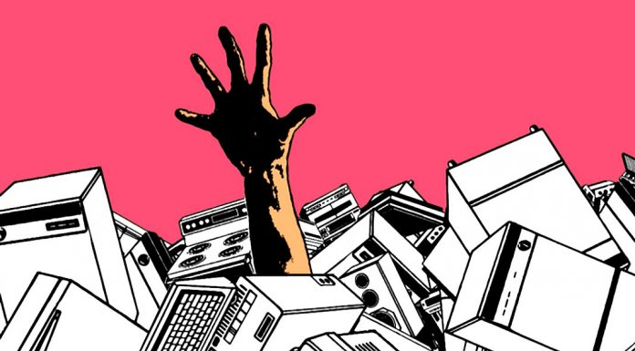

⏳ Obsolescencia Programada

La obsolescencia programada es una estrategia utilizada por algunas empresas para diseñar productos con vida útil limitada. Esto significa que los dispositivos dejan de funcionar correctamente o se vuelven poco útiles después de cierto tiempo, lo que impulsa a los consumidores a comprar nuevos productos con mayor frecuencia.
El concepto comenzó a expandirse durante el siglo XX con la producción industrial en masa. En lugar de fabricar productos extremadamente duraderos, algunas compañías optaron por planificar su duración para mantener un consumo constante y estimular la economía.
Hoy en día, este fenómeno está especialmente presente en dispositivos electrónicos como teléfonos móviles, ordenadores, televisores e impresoras, donde la evolución tecnológica es muy rápida.
Ejemplos
La obsolescencia programada puede presentarse de diferentes formas: física, tecnológica o psicológica. La siguiente tabla muestra algunos casos comunes:
| Tipo | Ejemplo | Consecuencia |
|---|---|---|
| Física | Baterías que pierden capacidad rápidamente | El dispositivo necesita reemplazo antes de tiempo |
| Tecnológica | Sistemas operativos sin actualizaciones | El equipo queda inseguro o incompatible |
| Estructural | Piezas difíciles o caras de reparar | Resulta más barato comprar uno nuevo |
| Software | Programas incompatibles con hardware antiguo | El usuario se ve obligado a actualizar |
| Psicológica | Nuevos modelos con pequeños cambios estéticos | Genera sensación de producto “antiguo” |
Impacto ambiental
Este fenómeno provoca un aumento en la producción de residuos electrónicos, contribuyendo a la contaminación ambiental. Cada año se generan millones de toneladas de basura electrónica compuesta por plásticos, circuitos y metales pesados.
Muchos dispositivos contienen sustancias tóxicas como plomo, mercurio o cadmio, que pueden contaminar el suelo y el agua si no se reciclan correctamente. Además, fabricar nuevos dispositivos requiere grandes cantidades de energía y recursos naturales.
La extracción de minerales necesarios para la tecnología moderna también produce impactos ambientales importantes, como deforestación, emisiones contaminantes y un elevado consumo de agua.
Posibles soluciones
- Fabricar productos más duraderos y resistentes.
- Facilitar la reparación mediante piezas accesibles.
- Promover leyes que apoyen el derecho a reparar.
- Fomentar el reciclaje electrónico responsable.
- Comprar dispositivos reacondicionados.
- Actualizar solo componentes en lugar de cambiar todo el equipo.
- Concienciar sobre el consumo tecnológico responsable.
Algunos países ya aplican normativas que obligan a los fabricantes a garantizar repuestos durante varios años y a informar sobre la vida útil estimada de los productos.
Conclusión final
La obsolescencia programada representa uno de los grandes desafíos de la sociedad tecnológica actual. Aunque impulsa la innovación y el crecimiento económico, también genera un impacto ambiental significativo y fomenta hábitos de consumo poco sostenibles.
Adoptar modelos de producción más responsables, promover la reparación y concienciar a los consumidores son pasos fundamentales hacia una economía circular donde los productos duren más y los recursos naturales se utilicen de manera eficiente. El equilibrio entre avance tecnológico y sostenibilidad será clave para reducir la contaminación y proteger el medio ambiente en el futuro.